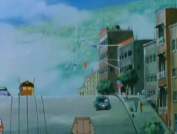
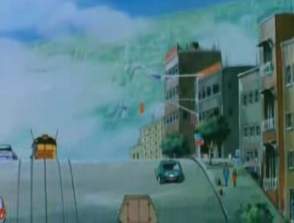

Libot & Candelabra Libot & Candelabra
Side 6 Bunch 35 Mirrored Colony Cluster One of the many colony clusters of Side 6, Libot is known to be a sparsely populated colony, filled with forests and beautiful lakes. However, it and Candelabra still maintain a decent population, and one which has been known to vote pro-Federation to a great degree. Libot and Candelabra   
|